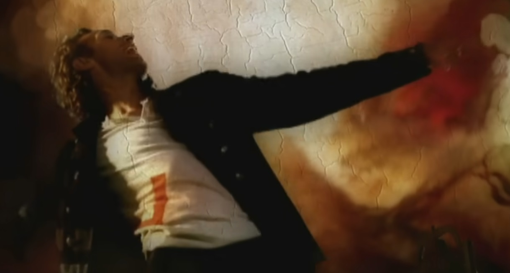
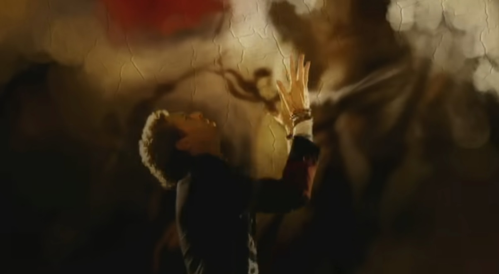
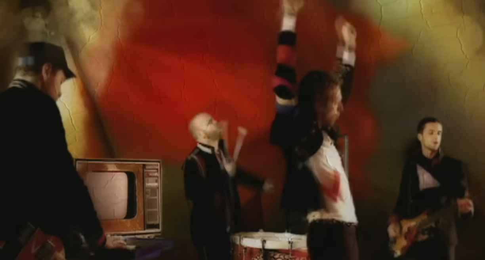
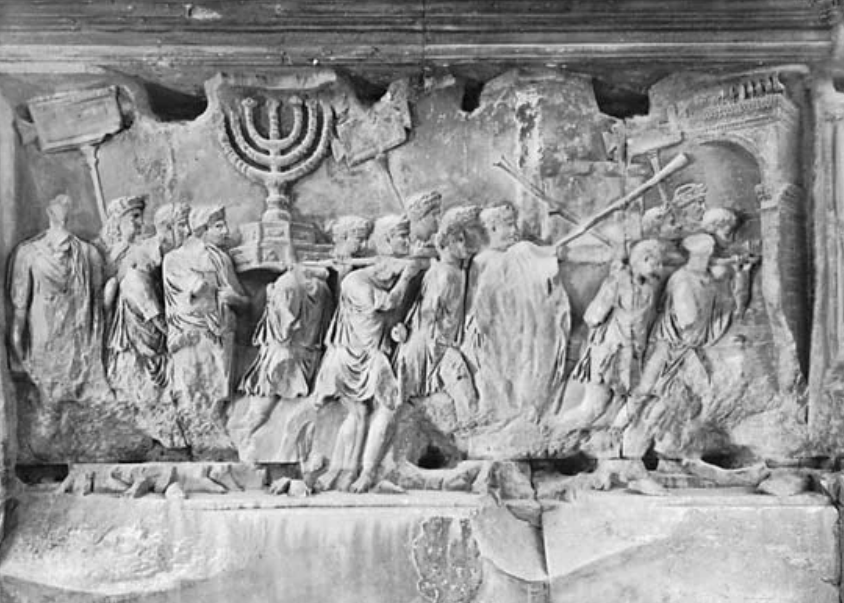
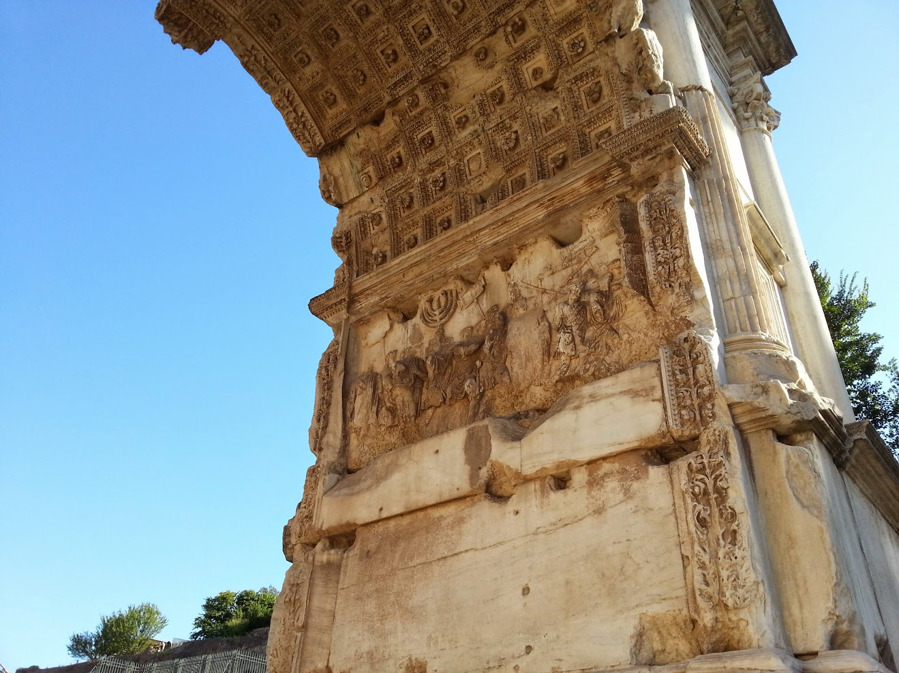
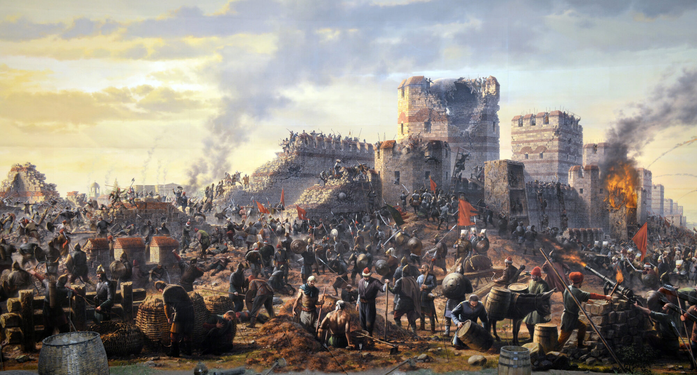
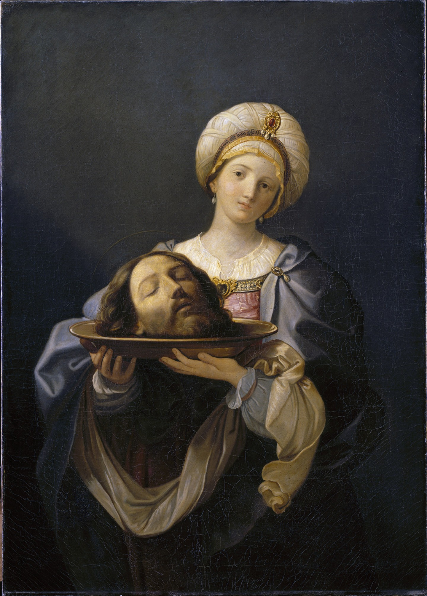
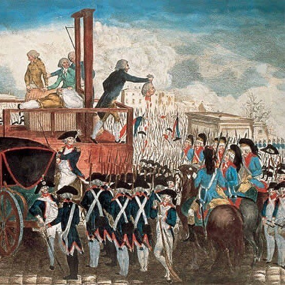

예루살렘의 종소리 - Coldplay의 Viva La Vida 가사 해설
게시: 2025-03-06T06:30:38+09:00
콜드플레이의 최고 히트곡인 Viva La Vida는 워낙 유명한 곡이고 이미 훌륭한 번역과 설명도 많지만, 콜드플레이가 4월에 내한공연하는 것을 기념하여 번역했습니다. 노래 제목 Viva La Vida는 스페인어로서 그냥 "인생 만세" 정도의 뜻입니다. 그래서 제목과 함께 그 신나는 박자를 들으면 그냥 인생을 즐기자는 내용으로 오해하기 쉽습니다만, 그 가사 내용은 꽤 심각하고 체념적인 것입니다.
이 노래 가사의 형식은 몰락한 군주/왕/독재자의 독백으로 되어 있는데, 가사를 들어보면 이 노래의 주인공은 원래 왕족으로 태어난 것도 아니어서 왕이 될 운명은 아니었는데, 어떤 혼란스러운 변혁기에 어쩌다 기회를 잡아 권좌에 오른 것처럼 나옵니다 (It was the wicked and wild wind, blew down the doors to let me in). 그 후에 온갖 잔인함과 거짓말로 철권을 휘두르다 혁명이 일어났고, 그래서 감방에 갇혀 사형을 기다리는 신세가 된 것 같습니다.
참고로 이 노래가 수록된 동명 앨범인 Viva La Vida는 프랑스 혁명을 테마로 사용하고 있고, 공식 뮤직 비디오에서 콜드플레이 멤버들이 입고 나오는 의상도 레미제라블에 나오는 캐릭터들, 가령 앙졸라 같은 인물들의 의상을 모티브로 삼았다고 합니다. 또 공식 비디오의 배경 화면에 들라크루와의 '민중을 이끄는 자유의 여신'을 사용하고 있습니다.
  
노래 클라이맥스 부분에 '예루살렘의 종소리와 로마 기병대의 합창 소리'가 나오는 것은 다소 뜬금없다는 생각이 들지요. 처음 저는 이걸 보고 서기 70년 로마군에 의한 예루살렘 멸망 장면을 딱 떠올렸습니다. 다만 왜 몰락한 독재군주의 귀에 갑자기 예루살렘의 종소리와 로마군 합창소리가 들릴까요?

(서기 70년 예루살렘을 함락시키고 각종 기물을 약탈하는 로마군 병사들의 모습입니다. 유대교의 상징인 메노라(menorah), 즉 많은 가지가 달린 촛대의 모습이 선명히 묘사되어 있습니다.)

(예루살렘을 약탈하는 로마군 병사들을 묘사한 저 부조는 로마에 있는 티투스 개선문 (Arch of Titus)의 안쪽에 새겨져 있습니다.)
원래 유럽 역사에서 도시의 종들이 일제히 울리는 것은 매우 기쁜 일이거나 반대로 매우 슬픈 일입니다. 가령 1453년 5월 29일, 오스만의 공격에 비잔틴 제국의 수도 콘스탄티노플이 함락될 때도 시내의 교회 종들이 일제히, 격렬하게 울려댔다고 합니다. 반대로 1944년 나찌 독일군에게서 파리가 해방될 때도 파리의 성당들은 일제히 종을 울렸고요. 전에 소개한 존 바에즈의 노래 'The night we drove old Dixie down'에서도 남부 연합의 수도 리치몬드가 함락될 때 일제히 종이 울리면서 사람들이 노래를 부르는 장면이 묘사되지요 (https://nasica1.tistory.com/365 참조). 아마도 리치몬드 시민들은 눈물을 흘리며 종을 쳤을 것이고, 북군은 마침내 승전했다고 기뻐서 노래를 불렀을 것입니다.

(1453년 콘스탄티노플의 함락 장면입니다. 과거 수많은 민족들과 왕국들, 가령 아랍인들과 불가르족, 슬라브족, 훈족 등의 공격을 버티어냈던 콘스탄티노플은 결국 오스만 투르크에게 이렇게 함락됩니다.)
이렇게 도시의 해방이나 함락 때 종을 울리는 것은 도시를 의인화하여 도시의 죽음 또는 부활을 알리는 행위입니다. 중세 이후 유럽에서 왕자가 태어나거나 혹은 왕이 죽거나 하면 종을 울리는 것처럼이요. 이렇게 사람이 죽었을 때 종을 울리는 전통은 'No man is island'(어떤 인간도 혼자 사는 것이 아니다)라는 구절로 유명한 17세기 초 영국의 시인 존 던(John Donne)의 시 'Devotions upon Emergent Occasions'에서 'therefore never send to know for whom the bell tolls; it tolls for thee' (종소리가 울릴 때 누가 죽었길래 종을 치는지 알아보러 사람을 보내지 말라, 바로 너를 위해 울리는 것이다) 라는 표현으로 나옵니다. 이 구절에서 헤밍웨이의 유명한 소설 제목, '누구를 위하여 종은 울리나'가 나왔지요.
본인의 정권이 무너지는 것을 보고 있는 지배자의 귀에 멸망하는 예루살렘의 종소리가 들릴 수도 있겠다는 생각이 들긴 합니다만, 너무 큰 의미를 두지 않는 것이 좋을 수도 있습니다. Imagine Dragon도 그렇고 Coldplay도 그렇고, 요즘 밴드들은 (하긴 예전 밴드들도) 가사에 엉뚱한 문구를 집어 넣는 경우가 꽤 있거든요. 아마 rhyme을 맞추기 위해 이 단어 저 문장 집어넣다 보면 그렇게 될 수도 있을 것 같습니다. 콜드플레이는 가사에 왜 로마 기병대나 예루살렘이 나오는지에 대해서 설명한 적이 없고, 아마 앞으로도 없을 것 같습니다.
가령 서기 70년 로마군이 예루살렘을 함락시킬 때, 예루살렘에는 커다란 종이 없었습니다. 작은 방울 같은 종은 유럽이나 근동에도 전부터 있었지만, 거대한 종은 주조하기가 기술적으로 어려운 물건이었거든요. 거대한 종을 만드는 기술은 7세기~12세기 사이 언제인가 중국에서 이슬람 세계를 거쳐 유럽으로 전파된 것이었습니다. 하지만 그런 세부적인 부분은 이 노래를 감상하는데 전혀 중요하지 않습니다.
전에도 이야기했지만 대중가요의 가장 좋은 점 중 하나는, 같은 가사에 대해서도 듣는 이의 성격, 들을 때의 감정과 상황에 따라 온갖 의미로 해석될 수 있다는 것입니다. 진정한 의미에서 그런 가사를 완성하는 것은 바로 듣는 이의 해석이라는 것이지요. 그러니 그 가사의 뜻은 이게 맞다 저게 맞다 따질 필요는 없다고 생각합니다. 그래서 Miss American Pie를 작사작곡하고 부른 돈 맥클린에게 '대체 가사에서 말하는 것들이 무엇이냐, 가령 이 부분은 비틀즈, 저 부분은 엘비스 프레슬리를 말하는 것이 맞냐' 라고 많은 사람들이 물었지만 돈 맥클린은 언제나 'poetic silence' 즉 시인은 입을 다물 권리가 있다는 주장을 하며 절대 설명하지 않았습니다. 그게 그 노래 가사를 더욱 가치있게 만드는 것입니다.

(세례 요한의 목을 얹은 은쟁반을 들고 있는 살로메입니다. 17세기 초반의 화가 Guido Reni 작품입니다.)

(...)

감상은 역시 공식 비디오가 제일 좋은 것 같습니다. https://www.youtube.com/watch?v=dvgZkm1xWPE I used to rule the world Seas would rise when I gave the word Now in the morning I sleep alone Sweep the streets I used to own 한때 난 세상의 지배자였어 바다도 내 명령에 따라 움직였지 이제 난 아침에 혼자 일어나 전엔 내 것이었던 거리를 청소하는 신세야 I used to roll the dice Feel the fear in my enemy's eyes Listen as the crowd would sing, "Now the old king is dead, long live the king!" 난 내 원수들 앞에서 주사위를 굴리곤 했어 그럴 때 그들의 눈에 공포가 어리는 것을 즐겼지 군중이 이렇게 외치는 소리도 들었어 "예전 왕은 죽었다, 새로운 왕 만세!" One minute I held the key Next the walls were closed on me And I discovered that my castles stand Upon pillars of salt, pillars of sand 한 순간 난 열쇠를 쥔 사람이었는데 다음 순간엔 사방의 벽이 나를 옥죄고 있더군 알고보니 내 성채는 소금과 모래로 된 기둥 위에 서있었더라고 I hear Jerusalem bells a-ringin' Roman Cavalry choirs are singin' Be my mirror, my sword and shield My missionaries in a foreign field 내 귀에 예루살렘의 종소리가 들려 로마 기병대가 합창을 하네 내 거울, 검, 방패가 되어줘 이역 땅의 내 선교사들아 For some reason, I can't explain Once you'd gone, there was never, never an honest word And that was when I ruled the world 왠지 설명은 못하겠지만 니가 가버린 이후엔 진실된 말은 한 마디도 없었지 내가 세상의 지배자일 땐 그랬어 It was the wicked and wild wind Blew down the doors to let me in Shattered windows and the sound of drums People couldn't believe what I'd become 그건 짓궂고 거센 바람이 문을 열어준 덕분이었어 내가 안에 들어갈 수 있었던 것 말이야 창문은 깨지고 북소리가 울렸지 사람들은 내가 어떤 신분이 되었는지 믿지 못하더군 Revolutionaries wait For my head on a silver plate Just a puppet on a lonely string Oh, who would ever wanna be king 혁명가들이 기다리고 있어 내 목을 잘라 은쟁반에 가져오기를 말이야 난 외줄에 매달린 꼭두각시 신세야 아, 대체 누가 왕 같은 거 되고 싶겠어 I hear Jerusalem bells were ringing Roman Cavalry choirs were singing Be my mirror, my sword and shield My missionaries in a foreign field 내 귀에 예루살렘의 종소리가 들려 로마 기병대가 합창을 하네 내 거울, 검, 방패가 되어줘 이역 땅의 내 선교사들아
For some reason I can't explain I know St. Peter won't call my name Never an honest word But that was when I ruled the world 왠지 설명은 못하겠지만 베드로께서 날 천국에 들여보내 주진 않을 거라는 건 알고 있어 진실된 말은 한 마디도 없었지만 그건 내가 세상의 지배자일 때였지
** 다들 아시다시피, 이 노래는 가사 덕분에 2016년 박근혜 탄핵 당일 라디오 음악 프로그램에서 많은 사람들이 방송해달라고 신청을 했다고 합니다.